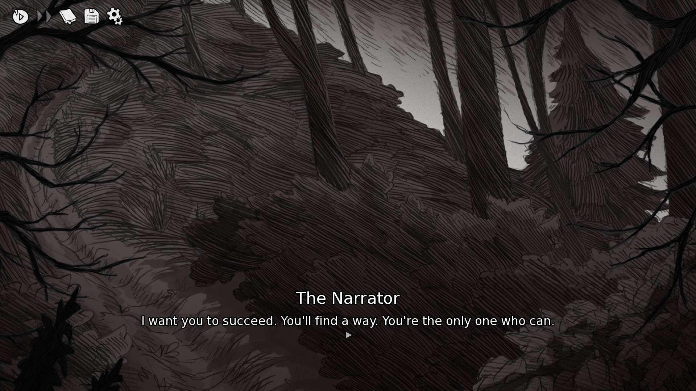
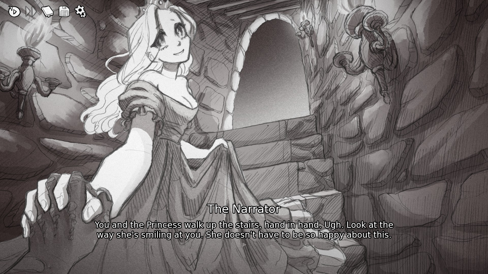
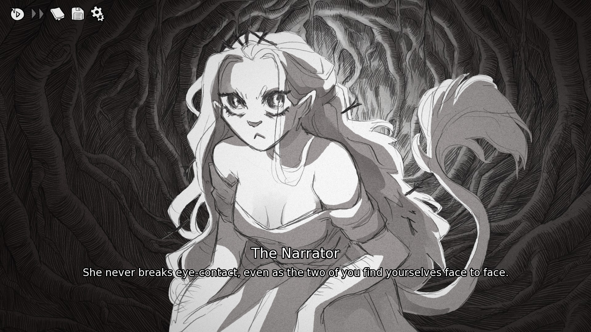
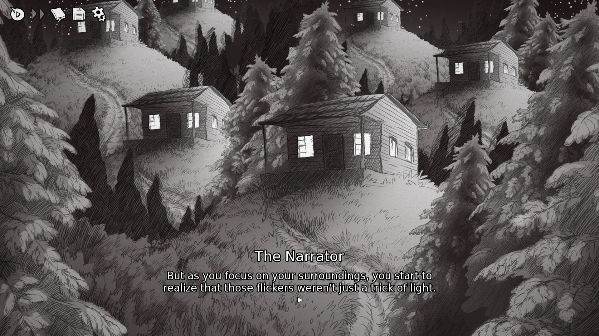

Sometimes, you come across something so blindingly beautiful that you want to spend all your time with it, to understand everything you can. At least, I know I do. However, to know all of something that exists in multitudes is to kill its essence, to kill what it truly is. This is a review of Slay the Princess. I know, I'm years late. I know, it's been talked about to death. I wanted, today, to simply talk about what it means, what I loved about it, and why I bothered writing a review at all.
Slay the Princess is a 2023 tragic horror indie visual novel from studio Black Tabby Games, also responsible for the in-progress Scarlet Hollow (and I know, I'll get to that one soon enough). Mechanically, Slay the Princess is a choice-based adventure game with a multitude of routes based around a single concept, in a way that is very similar to something like The Stanley Parable. You are given a very simple scenario by a narrator (there is a Princess in a cabin in the woods before you, and you are to use the Pristine Blade to kill her), and through the actions you choose, this scenario warps and changes to become something else. Each playthrough is different from the last, a little in some places, a lot in others, and when you reach the end, you've seen a game personalized to how you, the player, have chosen for your character to act. Choices are split between ones where you talk to aspects of yourself, perform actions, or potentially speak to the Princess, and it is through these choices that you alter how your encounter (and any future encounters, if any) with the Princess will go. There are no quicktime events or minigames, and it is in this simplicity that Slay the Princess shows exactly how complex a visual novel can be.
Before I continue, I want to be 100% clear. If you have not played Slay the Princess, do so before reading further, as I will be spoiling some aspects of this game. There is a reason that this game (alongside Doki Doki Literature Club) is so well-beloved even among people who would otherwise avoid visual novels.

My Expectations
I waited three years to play this game, avoiding spoilers somehow the entire time. When I chose not to play this on release, it was my childish, contrarian urges preventing me from enjoying something because it was popular. I recognized that quite some time ago (alongside a lot of my backlog) and I've worked to correct that. My expectations in the current day were that it would be some sort of meta-horror visual novel, with some visceral imagery and shocking text, as it was so widely loved. I expected character designs to be rather simplistic and expressive, rather than detailed, because I knew the actual character cast of the game was quite small. I had heard that the soundtrack was phenomenal, but people say a lot of soundtracks are very good when they're generic orchestral fantasy music or simple background noise.
The Story
Slay the Princess is a game in which you, the Hero, are sent to a cabin in the woods by the Narrator to slay a Princess in the basement with your Pristine Blade, otherwise she will cause the end of the world. This simple premise, to anyone who has played anything that relies on subversion of expectations, is easy to see through, and it's quite clear early on that things are not quite as simple as they seem, and that it is unclear if you can trust the Narrator, the Princess, or even yourself. As you take slightly different paths through the simple act of entering the cabin, grabbing the Pristine Blade, entering the basement, and choosing how to deal with the Princess, you reveal small variations in what the Princess is capable of, where she is imprisoned, and who or what she is. As you complete this task, your consciousness shifts to another reality, and you are given the chance to try again, but things are a little different depending on how you acted previously. It quickly becomes clear that the Narrator knows more than he is letting on as each "loop" reveals a new side to the Princess you've yet to see, and possibilities open and close to you. At the end of each loop, you take the heart of that variation of the Princess to a writhing eldritch mass, gaining some new information before being sent back to do it again, but this time, differently. Each playthrough has so, so many different hearts available, but only five are required to complete the game, meaning that to see them all will take multiple playthroughs or a lot of save-scumming. However, this is core to the story, and I would suggest not save-scumming, rather experiencing each new playthrough anew, as there are no endings — only new beginnings.

Music, Sound, and Artwork
This game is beyond gorgeous artistically, the use of monochrome assisted by subtle shades of red a core feature of the game's major themes, but also leading to something that looks distinct and beautiful time after time. Every aspect of the Princess is distinct, expressive, and evocative; every new cabin a new adventure. As the world twists, your perception twists with it, and each character sprite is lovingly crafted to tell the stories this game wanted to tell. Musically, it is quite subtle, but in a way that keeps the focus on the words and voice acting, with even the most tense music taking a backseat to the Narrator, Voices, and Princess acting out the play before you. The voice acting in this game is, if I may indulge myself in a small pun, Pristine. The Narrator, each Voice, each Princess are not only easy to differentiate but are so clearly masterful in their casting that it makes me cry. The Narrator's voice is exactly the right level of grating, the Princess is sweet, sad, or sometimes terrifying in a way that feels just a little unnatural. However, the all-stars of the voice acting cast go to the Voices, who all so clearly show who they are and what they're about between writing and intonation, even if you never looked at their names at all. The game is uncanny in all the right ways without being offputting to someone who might not handle gore as well, and for that, I say bravo.

What Slay the Princess Means to Me
Slay the Princess explores a lot of things. Far too many for me to list them all, and I've not seen every route, so I couldn't even try. Why, then, am I writing a review for a game I've not seen all of? I think at its core, the real beauty of Slay the Princess is that you don't know it all. You can never see the horizons you don't explore, and you have to be okay with that. As a human being, you only have so much time to live, and only so many outlets you can explore. There's a deeply unsettling part of my mind that thinks that there's something I could have been better at if my life had gone a little differently. Maybe, if I hadn't gone to college and broken my leg, I would have a career in some occupation that requires me to stand. Maybe, if I had given up on game design, I could have found my calling as a writer. Every second is a thousand avenues unexplored, and that multitude of choice is what I believe is at the core of what Slay the Princess really has to share. You can't get every route in one playthrough, you can't see all the variations of one route in that single playthrough, it's impossible, and what if this combination of routes means something different? What if I were a little nicer to Her? More decisive in my violence? What if I tried to escape, or tried nothing at all? The Princess has the role of opportunity, and by the end of your first playthrough you know that she's that and so much more. By contrast, the past is unchanging, decisions made are just that — decisions made. There is no opportunity in something that is final, and our main character is given a choice. We are given a choice. Even choosing nothing is making a choice. However, there is comfort and familiarity in the lack of possibility, and the greatest fear is the fear of the unknown. It's only by recognizing that both decision and opportunity are what we are as people that we can truly change ourselves and the world we inhabit.
I'm going to go in here into a little bit of my own process, working on my own game. I hope you'll indulge me, and if not, you can skip this paragraph. I'm someone who's always looked at visual novels as a game with very concrete, finite choice. I think there is comfort in making choices and outcomes predictable. However, I've never been someone who wants to make people comfortable with my art. Comfort is nice, but art should make you question how you look at things. Slay the Princess has made me question a lot about what can really be done with narrative storytelling by simply stripping away the innate predictability of input and outcome. When I started working on Geilt, it was originally a simple visual novel with RPG stats, and I found that making decisions stat-based made them not choice at all, but goals to grind towards. It felt like a cop-out. Sometime around the beginning of the year, I examined a lot about how I could handle choice, which is where I came back to the Science;Adventure games and looked at the Phone Trigger and Delusion Trigger systems, two means of making choices with no immediate, expected outcome. This game is yet another stop on that journey for me, but in reverse. Every input has an outcome, usually somewhat predictable, but the resulting state of the game can vary wildly. I think this game was an important game for me to play. I think anyone who really wants something to help them examine how they look at choice in interactive narratives should stop here, too.

Would I recommend this game?
I think the short answer is yeah. Play it. 10/10. The long answer is that I think everyone should play this, at some point, and waiting so long was a mistake. Play it. 10/10.